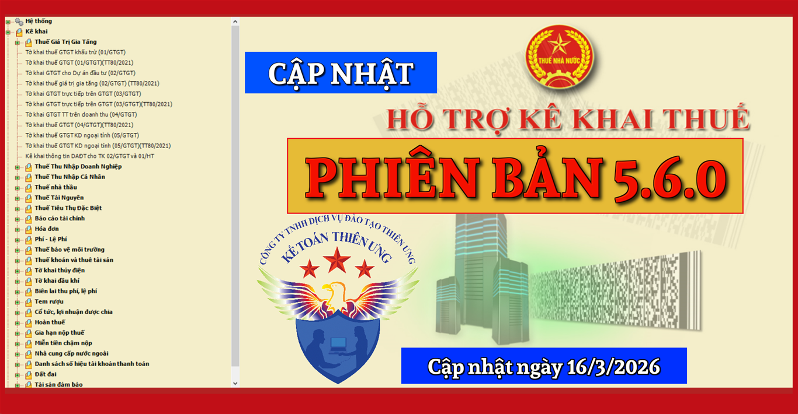
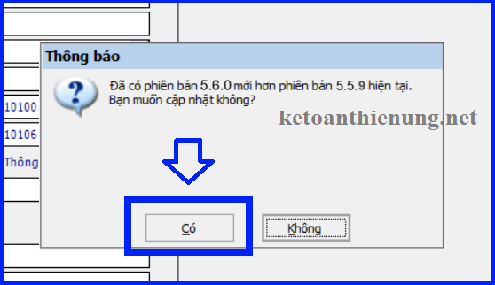
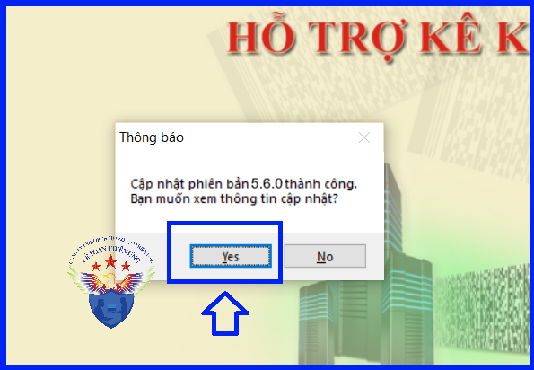

Phần mềm hỗ trợ kê khai thuế 5.6.0 mới nhất ngày 16/03/2026 của Tổng cục thuế. Tải phần mềm HTKK 5.6.0 mới nhất miễn phí tại đây - Phần mềm kê khai thuế mới nhất 2026.

TỔNG CỤC THUẾ THÔNG BÁO
V/v Nâng cấp ứng dụng Hỗ trợ kê khai - HTKK lên phiên bản 5.6.0
Cục Thuế thông báo nâng cấp ứng dụng Hỗ trợ kê khai - HTKK phiên bản 5.6.0 đáp ứng Nghị định số 373/2025/NĐ-CP của Chính phủ về sửa đổi, bổ sung một số điều của Nghị định 126/2020/NĐ-CP ngày 19 tháng 10 năm 2020 của Chính phủ quy định chi tiết một số điều của luật quản lý thuế và Thông tư số 18/2026/TT-BTC quy định về hồ sơ, thủ tục quản lý thuế đối với hộ kinh doanh, cá nhân kinh doanh, cụ thể như sau:
A. Tờ khai Quyết toán TNDN (03/TNDN) (TT80/2024)
- Tại phụ lục 03-6: Từ năm trích lập là năm 2025 trở đi cập nhật mức trích lập không vượt quá 20%.
- Nếu năm trích lập lớn hơn hoặc bằng năm 2025 thì mức trích lập tại mục I, II, III cho phép nhập số nhỏ hơn hoặc bằng 20%
- Nếu năm trích lập nhỏ hơn năm 2025 thì mức trích lập tại mục I, II, III cho phép nhập số nhỏ hơn hoặc bằng 10%
- Tại phụ lục 03-3D: Nút tích “Ưu đãi thuế TNDN dành cho doanh nghiệp khoa học công nghệ” không cho tích sửa thành cho phép tích chọn
- Tại phụ lục 92/2021/NĐ-CP: Cập nhật hiệu lực phụ lục từ ngày 01/01/2021 đến ngày 31/12/2021
B. Bộ báo cáo tài chính năm (TT24/2024/TT-BTC)
- Cập nhật định dạng của trường “Người đại diện theo pháp luật” từ định dạng ngày sửa thành định dạng nhập ký tự
C. Tờ khai 05/QTT-TNCN
- Cập nhật bảng kê excel của PL 05-3/BK-TNCN tại chỉ tiêu (08) “MST của người nộp thuế” cho phép nhập 12 số
Bắt đầu từ ngày 16/03/2026, khi lập hồ sơ khai thuế có liên quan đến nội dung nâng cấp nêu trên, tổ chức, cá nhân nộp thuế sẽ sử dụng các chức năng kê khai tại ứng dụng Hỗ trợ kê khai - HTKK 5.6.0 thay cho các phiên bản trước đây.
Tải phần mềm Hỗ trợ kê khai - HTKK 5.6.0 tại đây:

- Hoặc liên hệ trực tiếp với cơ quan thuế địa phương để được cung cấp và hỗ trợ trong quá trình cài đặt, sử dụng.
- Mọi phản ánh, góp ý của tổ chức, cá nhân nộp thuế được gửi đến cơ quan Thuế theo các số điện thoại, hộp thư điện tử hỗ trợ Người nộp thuế - NNT về ứng dụng Hỗ trợ kê khai - HTKK do cơ quan Thuế cung cấp.
Tổng cục Thuế trân trọng thông báo./.
- Hoặc liên hệ trực tiếp với cơ quan thuế địa phương để được cung cấp và hỗ trợ trong quá trình cài đặt, sử dụng.
- Mọi phản ánh, góp ý của tổ chức, cá nhân nộp thuế được gửi đến cơ quan Thuế theo các số điện thoại, hộp thư điện tử hỗ trợ Người nộp thuế - NNT về ứng dụng Hỗ trợ kê khai - HTKK do cơ quan Thuế cung cấp.
Tổng cục Thuế trân trọng thông báo./.
1. Điều kiện cài đặt phần mềm HTKK 5.6.0, máy tính của NNT cần đáp ứng thông số sau:
- Hệ điều hành WinXP (SP2, SP3), Win 7 trở lên… (không hỗ trợ hệ điều hành iOS, Mac).
- Máy tính có cài .NET Framework 3.5 trở lên (nếu chưa có tải bộ cài .NET Framework 3.5 Tại đây).
- Nếu máy tính sử dụng hệ điều hành Win 7 trở lên không phải cài đặt .NET Framework 3.5 mà chỉ cần kích hoạt .NET Framework 3.5 đã tích hợp sẵn: Thì kích hoạt theo tài liệu hướng dẫn cài đặt sau: Tải về


Như vậy là cập nhật xong phần mềm HTKK 5.6.0
Kế toán Diệu Tâm chúc các bạn cập nhật HTKK thành công!
----------------------------------------------------------------------------